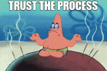

Hi, I'm Himon.

Nice to meet you. I like to research cool things in AI, and I sometimes write about things I find interesting.
Feel free to reach out to me

Nice to meet you. I like to research cool things in AI, and I sometimes write about things I find interesting.
Feel free to reach out to me
I'm a grad student. I'm finishing up my master's in CS and working on my thesis right now on multi-agent planning and LLM metacognition. I also plan to start my PhD soon.
For more details, check out my resume.
I like AI, the whole superset. I started how most people started back then, with neural networks for classification. Then I worked on image processing and disease detection with ResNets and graph neural networks. I then worked with Dr. Adham Atyabi at the NeuroCognition Laboratory (NCL) on brain-computer interface (BCI) and cognitive workload assessment. I was a Graduate Research Assistant (GRA) in the Quantum-Classical AI and Software Engineering (QAS) Lab with Dr. Armin Moin. I got to work on an energy-efficient AI project and submitted a poster to ICSE! Then I took a sharp turn and tried quantum computing in the Q-Dev Project working on quantum ML and quantum NLP.
I'm currently working with Dr. Jugal Kalita at the Language Information and Computation (LINC) Lab. I am and have been working on multi-agents, reinforcement learning, low-resource and underrepresented languages, knowledge distillation, multimodal language models, explainability and interpretability, among others.
Lately I've been interested in post-transformer architectures, particularly MAMBA, JEPA, diffusion, rectified flow, linear attention, etc. Small language models, continuous learning, and emergent behaviors excite me a lot!.
I like simplicity and there are way too many tools out there. If I can oonga, then I boonga. I wrote this website in pure HTML and some splash of CSS.
I primarily work with Python for AI research and quick prototyping using Jupyter in VS Code or Google Colab. I like PyTorch. Tensorflow is fine too, but way too many version conflicts. I'm learning Go because it looks fun. I use LangChain, LangGraph, HuggingFace for LLM and agentic projects. I use Unsloth, Llama.cpp, Accelerate because they save me a ton of headaches.
I have used Cirq, Qiskit, Pennylane for quantum computing projects. I frequently use C, C++, Java, MATLAB for different stuff as needed.
I have worked with AWS products like SageMaker, EC2, S3, Braket, etc.